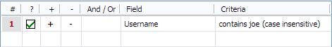
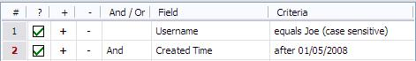
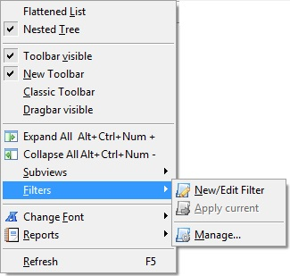
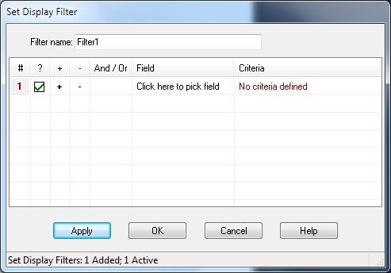
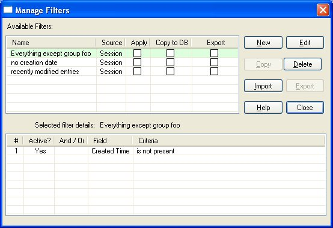

Filters can be accessed via the View menu.
A "filter" is a criteria (or set of criteria) that an entry either
matches or doesn't match. Password Safe allows you to define filters,
and display only those entries that match a
given filter. You can define a filter for a one-time query, or you can
define several filters, naming them and store them persistently, for
repeated use. Filters may be either stored along with the database, or
externally, for sharing the same filter across several databases.
To define a new filter, select the "View → Filter → New/Edit Filter" menu entry. The following dialog box will be displayed:
As you can see, each Filter consists of one or more rows,
where each row defines a criteria on a given field.
The conditions defined in each row can be either "and" or "or" the
condition defined in the previous row. This allows you to define the
following kinds of filters:
As you can see, the filters can be arbitrarily complex.
The columns in the Filter table are as follows:
Once you've defined a filter, clicking on 'Apply' will apply the filter on the entries in the database, while leaving the Set Filter dialog box open. This is useful for fixing and refining the filter based on the results. Clicking on 'OK' will also apply the filter, but will close the Set Filter dialog box.
When a filter is active, the number of entries shown compared to the total
number in the database is shown in the Status Bar and a small red and white box
( ) appears in the far right
of that bar. In addition, the displayed entries are shown in red.
) appears in the far right
of that bar. In addition, the displayed entries are shown in red.

Set/Edit Filter is a good way to work with filters for a one-time task. If, however, you find that you have several filters that you wish to use repeatedly, then you can store them and manage them effectively via the "View → Filter → Manage..." dialog box.
The Manage Filters dialog box has two tables. The upper table lists the filters, and the lower table displays the contents of the currently selected filter.
Filters can be stored either as part of the current database, or externally, as XML files. Storing filters externally is a good way to share filters across databases, whereas storing them as part of the database ensures that potentially sensitive information in the filters' definitions is protected.